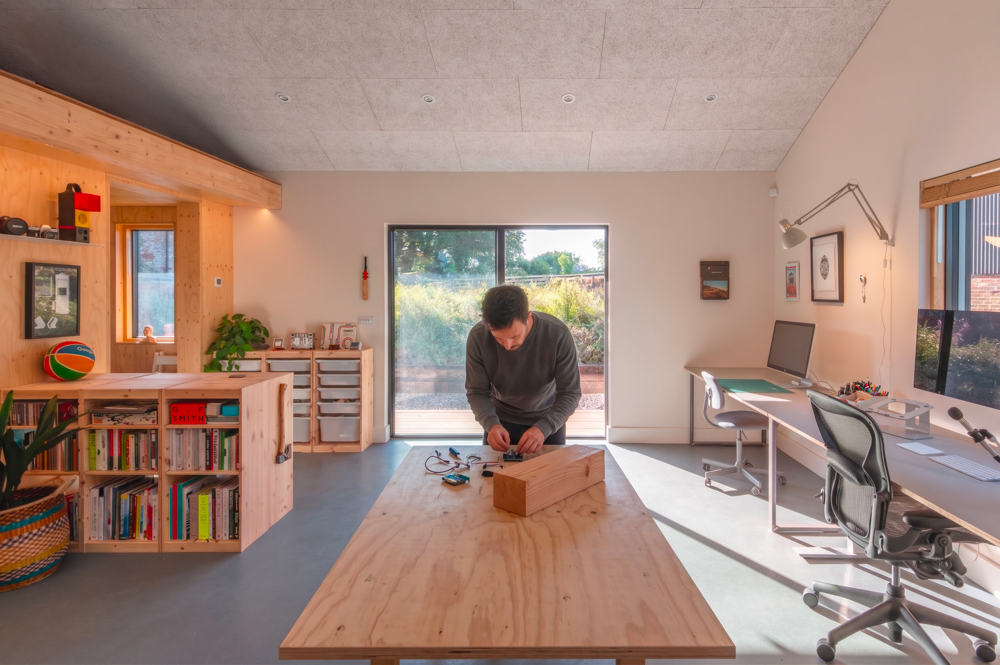

Ben Pawle - Principal Designer & Inventor.
As an accomplished design practitioner, founder and strategist, Ben’s work focuses on the invention of new products, paradigms, and the culture they inspire.
He currently works at Nord Projects where together with Joe and Mike they invent the future of computing for the world's most interesting companies.